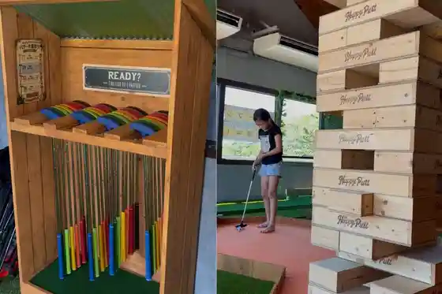
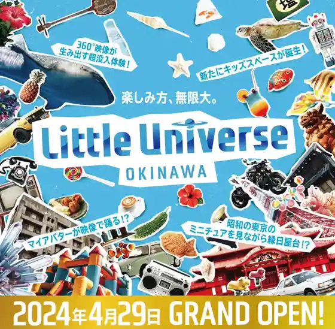

DMM Kariyushi Aquarium
Tomigusuku, Okinawa · 098-996-4844 · Official / source link
Happy Putt
Tomigusuku, Okinawa · 098-960-5334 · Official / source link

Little Universe OKINAWA
Tomigusuku, Okinawa · 0570-098-333 · Official / source link

MAJUN OKINAWA Iiasu Okinawa Toyosaki Mise
Tomigusuku, Okinawa · 098-996-3499 · Official / source link
Pilialoha Diving Services
Tomigusuku, Okinawa · 070-4462-1090 · Official / source link
SEE THE SEA select & resort
Tomigusuku, Okinawa · 098-996-4640 · Official / source link
The Beverly Club
Tomigusuku, Okinawa · 098-996-4573(0989881742) · Official / source link
tete by okinawa
Tomigusuku, Okinawa · 070-1945-9627 · Official / source link
Okinawa no Okurimo no (Senaga Shima 47STORE)
Tomigusuku, Okinawa · 098-996-4348 · Official / source link
Okinawa Kogei no Mori
Tomigusuku, Okinawa · 098-987-0467 · Official / source link
Kuusu no Mori Chuko Kura
Tomigusuku, Okinawa · 098-851-8813 · Official / source link
Iiasu Okinawa Toyosaki
Tomigusuku, Okinawa · 098-840-6900 · Official / source link
Ororarentaka
Tomigusuku, Okinawa · Official / source link
Puzochiizu Ga Kisera Tomigusuku Mise
Tomigusuku, Okinawa · 098-969-0625 · Official / source link
Yonazu
Tomigusuku, Okinawa · 098-850-8633 · Official / source link
Kyukaigun Shireibu Hori
Tomigusuku, Okinawa · 098-850-4055 · Official / source link
Okinawa ECO Rentaka
Tomigusuku, Okinawa · 098-856-0705 · Official / source link
Okinawa Autorettomoru
Tomigusuku, Okinawa · Official / source link
Okinawa Karate Hall
Tomigusuku, Okinawa · 098-851-1025 · Official / source link
Man Kosui Tori Shitchi Center
Tomigusuku, Okinawa · 098-840-5121 · Official / source link
Senaga Shima
Tomigusuku, Okinawa · Official / source link
Senaga Shima Umikajiterasu
Tomigusuku, Okinawa · 098-851-7446 · Official / source link
Senaga Shima Sansetto Park
Tomigusuku, Okinawa · Official / source link
Matama Hashi
Tomigusuku, Okinawa · Official / source link
Toyosaki Raifusutairu Center TOMITON
Tomigusuku, Okinawa · 098-995-8595 · Official / source link
Toyosaki Bi Ra SUN Beach
Tomigusuku, Okinawa · 098-850-1139 · Official / source link
Tomigusuku Uji Some Kyodokumiai Tomigusuku Kanko Plaza (Teiguma Kan) Nai
Tomigusuku, Okinawa · 098-850-8454 · Official / source link
Tomigusuku Rekishi Minzoku Shiryo Tenjishitsu
Tomigusuku, Okinawa · 098-856-3671 · Official / source link